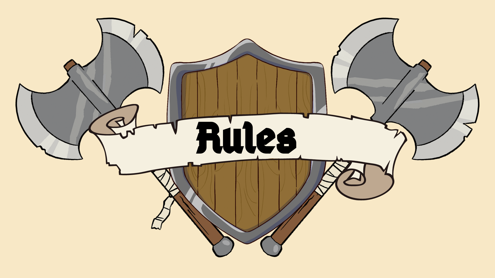

Nosso sistema de recompensas foi criado para reconhecer e premiar os colaboradores que se destacam ao realizar determinadas tarefas e atingir certos objetivos. Este sistema é baseado em títulos que representam diferentes tipos de conquistas. Ao completar as missões e requisitos estabelecidos, o colaborador poderá receber um dos seguintes títulos: Arqueiro, Mago, Cavaleiro, Bárbaro, Criatura Mítica e Titan. Cada título traz uma série de benefícios exclusivos e demonstra o comprometimento do colaborador com a comunidade.
Os arqueiros são rápidos, precisos e estratégicos. Aqueles que conquistam este título demonstram habilidade e planejamento em suas ações.
Magos são mestres do conhecimento e do raciocínio. O título de Mago é concedido àqueles que trazem soluções inovadoras e compartilham sua sabedoria com a comunidade.
Os cavaleiros são guardiões da comunidade, conhecidos por sua lealdade e espírito de equipe. Quem recebe este título é reconhecido por sua dedicação e apoio constante aos demais.
Bárbaros são conhecidos por sua força e resiliência. Este título é dado àqueles que enfrentam grandes desafios e persistem, mesmo diante de adversidades.
A Criatura Mítica é um ser magico selvagem. Se adapta para sobreviver
O Titan é um ser lendário, raro e poderoso. Este é o título mais alto, reservado àqueles que demonstram excelência em múltiplas áreas, sendo praticamente insubstituíveis na comunidade.